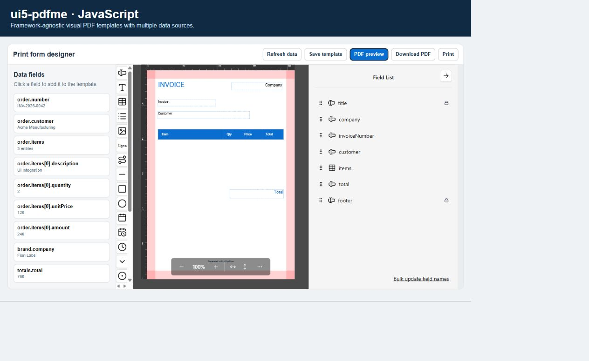

Design
Add text, tables, images, signatures, shapes, dates, and codes; position them and adjust their properties.
Learn to open a template, insert content, check the result, and save the design without needing to understand its technical integration.
ui5-pdfme combines a visual design with fields supplied by the application. The result is a reusable template that can generate many documents with different data.
Add text, tables, images, signatures, shapes, dates, and codes; position them and adjust their properties.
Insert fields from the data panel so the application fills the document automatically.
Check the PDF, save the template, and download or print the final document.
Select a numbered area in the image to discover what you can do there.

Open the catalog to search, filter, and retrieve saved designs.
Use it when: you want to start from an existing template instead of the current design.
Save the template, preview, download, or print the PDF, and access help or full screen.
Tip: preview before downloading or printing to inspect the actual output.
Shows available values. Selecting a field inserts it into the document and connects it to application data.
Tip: use search and check whether the field is included or not included.
Adds static content such as text, images, tables, shapes, or dates. Barcodes and QR groups the available code formats.
Use it when: the content does not need to get its value from data.
Represents the document pages. Select, move, and resize each element here.
Tip: select an element to see its settings and drag it to change its position.
Locates an element and changes its identifier, content, style, and behavior.
Tip: use a short, semantic, unique identifier for every field.
Templates opens the catalog. The same toolbar contains PDF preview, download, print, help, and full screen.
Data fields are on the left. Immediately to their right, the side palette creates static content.
The canvas occupies the center. The Field List and properties are on the right to locate and configure each element.
| Type | When to use it | Behavior |
|---|---|---|
| Static | Titles, labels, instructions, lines, and decorative elements. | Keeps the content written in the template and shows an eye in the list. When repeated on every page, it also shows the stacked-pages icon. Value from data remains off. |
| Connected | Customer, date, amount, address, items, and any changing value. | Receives a value from the application. It shows the database icon and Value from data is on. |
This is the stable key connecting the design to its data. It must be unique across the whole template. Do not use translated text shown to the recipient; names such as customerName, invoiceDate, or items are preferable.
For a connected Text, enable Show label and edit Label text to render a compact field such as Subtotal: $125.50. The label is visible in the layout and is included in preview and the final PDF. For static Text, the flag remains checked and disabled because the template content already is its visible text.
Insert the field representing the complete collection, not just a property from its first row. Adjust headers, widths, and height with empty, small, and large examples.
Use it for sentences combining fixed text with several values, such as a summary with invoice number, customer, and total. Keep every variable available in the data.
Reserve enough space and check their quality in the generated PDF. Under Barcodes and QR, choose QR, Code 128, EAN-13, Data Matrix, or PDF417. Verify each code with a real scanner before publishing the template.
For a static header or footer, or a data-bound Text field, enable Fixed non-moving position. The element keeps its coordinates and stays outside the flow when tables or text grow. You may then enable Repeat on every page; the Text's resolved value is repeated too. Otherwise it is drawn only on its original page. During generation, the repeated element's boundary automatically extends the nearest top or bottom page padding so content that moves to another page cannot overlap it; configured padding remains the minimum. Repeated static text may use {currentPage} and {totalPages}. These options are hidden for connected fields other than Text and when the background is an imported PDF.
The first time, Save template requests metadata. Later saves update the open record unless the application provides a specific operation for creating another version.
| Value | Recommendation |
|---|---|
| Name | Describe the document and, when relevant, its country or language. |
| Description | State the purpose, recipient, and relevant special behavior. |
| Tags | Use consistent terms that make searching easier. |
| Draft | A design in progress or awaiting review. |
| Published | A version approved for operational use. |
| Archived | A design kept for historical purposes but not recommended for new documents. |
To configure where designs are listed and saved, see the technical Template catalog and repositories guide.
Browsers show their own print dialog. The editor cannot print silently.
| Problem | What to do |
|---|---|
| No data fields appear | Select refresh. If the panel remains empty, the application has not supplied data or you lack access; contact the functional owner. |
| A field is empty in the PDF | Check that it is connected, its identifier matches an available option, and the sample data has a value. |
| An identifier is rejected | Choose an available option for a connected field or use a unique name for a static field. |
| The fixed-position options are missing | Select a static element or a connected Text. These options are unavailable for other connected fields and imported PDF backgrounds. |
| A table overflows | Increase its space, reduce columns or text, and test with more rows. Review the following page too. |
| I cannot save or publish | Check the selected repository and status. The application may limit these operations according to your permissions. |
| The print dialog does not appear | Allow the PDF to finish generating and check whether the browser blocked the dialog or new window. |
For integration failures, consult technical troubleshooting.
| Template | The reusable design of a document. |
|---|---|
| Field | An element placed on a page. |
| Connected field | An element whose value comes from application data. |
| Identifier | The stable, unique name connecting a field to its value. |
| Repository | The source used to find and save templates. |
| Preview | A generated PDF used to check the result before downloading or printing. |